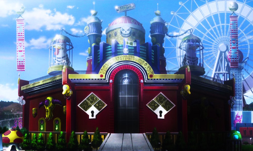
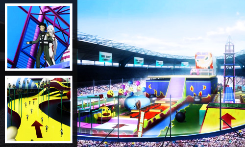

Deadman Wonderland
Deadman Wonderland é uma prisão privada em Tóquio que duplicou como um parque de diversões. Foi inaugurado no ano de 2017, com o início do Projeto de Recuperação de Tóquio.
8.1
Deadman Wonderland foi supostamente construído para o renascimento de Tóquio, atraindo muitos turistas para as atrações especiais da prisão. Na realidade, é um lugar para segurar Deadmen, e em particular, para selar o Wreched Egg .
A prisão é construída no sistema Mother Goose . Possui 6 salas normais (AF marcado) e 1 Deadmen-ward ( G Ward ). A prisão possui um sistema especial chamado "regra da sentença de morte". Isso é que todo prisioneiro no corredor da morte tem um colar modificado, aquele que constantemente injeta veneno. A única maneira de escapar da morte é comer doces a cada três dias. No entanto, Candy custa muitos Pontos de Elenco . Deadman Wonderland é a única prisão totalmente operada no Japão.
